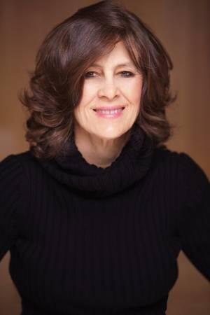

The eternal mysteries of English spelling and pronunciation:
Click the link for funny video: HERE
YouTube. (n.d.). YouTube. Retrieved May 7, 2023, from https://youtube.com/shorts/WKNV3R1NhIk?feature=share
 Laurie E. Maldague
Grade Level: 9-12th grade
Content Taught: English, ESL, Basic Skills, Math
Why I teach:
I am currently working as a high school GED teacher at the Robert E. Burton Adult School at San Quentin State Prison. It has been a very challenging but quite rewarding experience to teach older incarcerated teens and adults. In addition to my main subject, English, I had to learn and teach new areas of subject matter, including the entire mathematics curriculum, as well as a myriad of new online procedures. However, I feel that now that I am familiar with and knowledgeable about the new curricula and procedures, I can get back to the joy of teaching!
Initial CTSP Assessments vs. Post Assessments:
CSTP 3: Understanding and Organizing Subject Matter for Student Learning
Element 3.1: Demonstrating knowledge of subject matter, academic content standards, curriculum frameworks
Initial Assessment: Level 5: I was, until this year, only teaching English or remedial English, so I felt very confident in my knowledge of subject matter.
Final Assessment: Level 4: Since I was required to suddenly teach three other subjects-- primarily math, but also social studies and science-- I had to learn the material to feel strong and confident in teaching those subjects. Even in my specialty, language arts, I had to create a curriculum that was:
To satisfy these requirements, I created a “multi-faceted” approach by using supplemental books that nicely complemented the required text, which was Common Core Achieve (McGraw-Hill). See the list below:
The Richest Man in Babylon had stories that were not only entertaining and educational, but were also good sources of sophisticated academic vocabulary. The Straightforward Math series was a great option when students needed more scaffolding and practice problems in graphing linear equations, square roots, polynomials, and quadratic equations. I felt I learned a lot about which texts were successful and which were not. The texts mentioned above were found, through trial and error, to be the most effective.
CSTP 2: Creating and Maintaining Effective Environments for Student Learning
Element 2.4: Creating a rigorous learning environment with high expectations and appropriate support for all
students.
Initial Assessment: Level 4: I wasn't sure how to "draw out" several students in my class who seemed as if they had had many negative experiences in school and were overly cautious about answering questions or, indeed, asking questions.
Final Assessment: Level 5: I utilized "wait time" and "talk moves" to give students more time to formulate answers and to reflect on topics at hand. Using these techniques helped students, especially the shy ones, to participate more in discussions and to ask more questions. In RLA, this was most evident when students gave more focused answers on questions involving an author's thesis or point of view. In math, the positive effects of these techniques were evident when students were able to participate in solving problems or explaining solutions.
CSTP 6: Developing as a Professional Educator
Element 6.3: Collaborating with colleagues and the broader professional community to support teacher and
student
learning
Initial Assessment: Level 3: Since I was completely new to the job, I had to rely on all my colleagues to learn the substance of the material in three new subjects as well as procedures for attendance-taking, grade reporting, behavior reporting, etc. It was quite challenging, as stated in the Introduction, but once learned, all became smooth and almost easy!
Final Assessment: Level 4: I interpreted this standard as the basis for my learning effective teaching approaches with incarcerated students from other teachers. I also saw the "support teacher learning" part as an opportunity to teach my TAs effective teaching techniques, such as "showing, not telling," and asking the more timid students questions that the teacher knows the student can answer. Another idea from other colleagues that was particularly helpful was the practice of starting out the lesson with a quick review of a previous type of problem. This approach fits in perfectly with the "open entry, open exit" structure of our curriculum.
CSTP 5: Assessing Students for Learning
Element 5.1: Applying knowledge of the purposes, characteristics, and uses of different types of
assessments
Initial Assessment: Level 4: I was not sure if I should spend more time on practice materials in both RLA and math or on practice tests in those subjects in preparation for taking the "real" GED test.
Final Assessment: Level 5: Students were informally assessed in class by having individuals solve and explain the steps in analyzing texts or solving math problems. Students were assessed formally by taking the Aztec practice tests and the GED Ready tests as formative assessments and the GED exam as the summative assessment.
After many months of testing, I decided that the multi-faceted approach was the best. The students that came to the face-to-face class, then practiced problems online, and then took many formative practice tests were the most successful in passing the GED exam on the first or second try. Those who did not take many practice tests often had to take the GED multiple times (on average 5 times) in order to pass.
One very effective test-taking technique that the students liked very much was the lesson on how to eliminate wrong answers on standardized tests so they could narrow down the possible answers to choose from. They found this approach to be helpful in not only picking correct answers, but also in saving time.
CSTP 3: Understanding and Organizing Subject Matter for Student Learning
Element 3.2: Applying knowledge of student development and proficiencies to ensure student understanding
of subject matter.
Initial Assessment: Level 4: I wasn't sure that just being "a good teacher" would be enough to cut through the students' many years of negative classroom experience. Therefore, I decided to try to be as consistent and positive as possible in our routines and procedures in order to give students the confidence that they could trust me--and that my goal was their success.
Final Assessment: Level 4: As stated previously, I was teaching mainly English and math this last year. I also helped students read and interpret the material in social studies and science. Since most of the "expected knowledge" of social studies and science depended upon reading texts and recalling information with some analysis (DOK levels 1-2), I stressed the need for students to keep coming to the class presentations on English and math because these subjects took more time to absorb. English required much analysis, and math required more problem-solving, but both required more time to "sink in" as opposed to the other subjects. This was the case for the intellectual development of most students beyond the simple "recall" stage.
In English, my annotation technique was particularly effective in helping students focus on an author's main idea, purpose, audience, and point of view, for example. In math, my technique to have students explain the "why" of every single step contributed to their deeper understanding of the problem at hand.
One of the ways I contributed to the profession was by creating educational "pods." Two of those pods involved annotating and eliminating the "wrong" answers on standardized tests, such as the GED. For annotation, I created a protocol for quick and accurate annotation. The three rules for students to think about while doing annotation were:
We practiced this technique with several reading samples from our Common Core and Kaplan GED Preparation books, and the students found it to be quite helpful. The comments were that it was "easy" and "fast." This was the purpose of this approach because too many students think of annotation as "hard extra work" and something to be avoided. The second protocol had to do with recognizing the patterns of and eliminating "wrong" answers on standardized tests. The students were given a list of common "wrong" answer types, listed below:
Again we used reading selections from our Common Core and Kaplan GED Preparation books, which had writings on a variety of contemporary issues, such as the continued use of fossil fuels or the banning of smoking in restricted areas. The students really enjoyed this unit because they felt quite empowered to take the GED test successfully. They even told me they started to use this "elimination" technique for standardized tests in other classes as well-- with great results!
Another way I impact my students is by encouraging constant discussions about the value of education and the choices it gives a person. We talk about how someone with language skills, for example, has a good chance of succeeding as a teacher, a lawyer, a politician, or a business person. A person with math skills has a good chance of succeeding as a computer technician, an engineer, a doctor, a scientist, a teacher, or a business person as well. And an individual with both types of skills could have success in most any profession.
Teacher Performance Assessment:
Below is a letter of recommendation from my current Vice Principal.